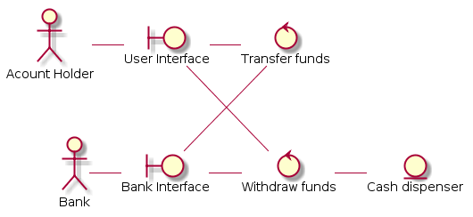
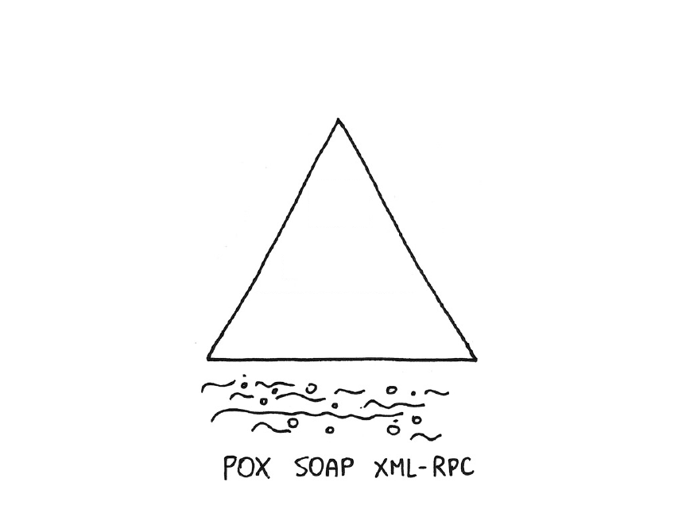
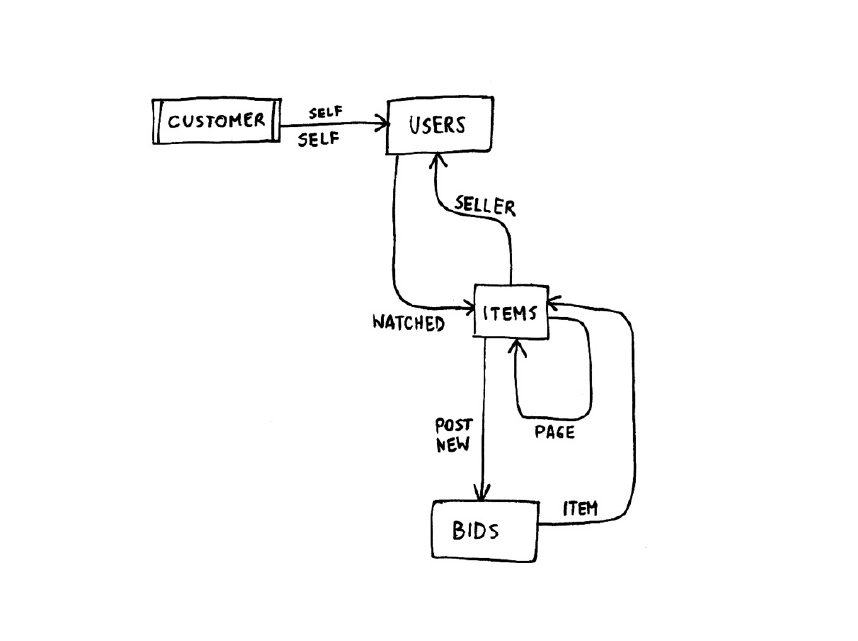

Web Services development
Jakub Marchwicki
Zakres
Wprowadzenie do usług sieciowych
Usługi sieciowe vs. tradycyjne API
REST - integracja poprzez zasoby
Projektowanie i definiowanie usług
Klient REST w języku Java
SOAP - wywołania usług / metod zdanych
Struktura i definiowanie dokumentu XML
Bezpośrednie i pośrednie (stub) wywołanie usług zdalnych
Bezpieczeństwo usług sieciowych
API
Application Programming Interfaces
opis sposobu komunikacji programów komputerowych
niezależny od medium: pamięć, dysk, sieć
może dotyczyć komunikacji w obrębie jednego programu, pomiędzy programami, pomiędzy systemami
dostarcza odpowiednich specyfikacji i dokumentacji
struktury danych,
klasy, obiekty, interfejsy
protokoły komunikacyjne
Po co API? Dla konsumenta
Dostarcza więcej kodu niźli samodzielnie bylibyśmy w stanie napisać
Często w lepszej jakości niż bylibyśmy w stanie napisać
Dostarcza strukturę
Rozgraniczenie pomiędzy rzeczami którymi musimy się przejmować i które po prostu są
Elementy które przestają być naszą odpowiedzialnością
Elementy na które nie mamy wpływu
Kiedy nie używać API?
Ograniczenie liczby zależności
Można samodzielnie napisać serwer WWW, albo użyć istniejącego
Excel motto: Find the dependencies — and eliminate them
Każda zależność to potencjalne błędy które możemy / nie możemy poprawić
If it’s a core business function — do it yourself, no matter what
— Joel Spolsky
Po co API? Dla dostawcy
- Nie tylko strona WWW
Użytkownicy korzystają z aplikacji mobilnej
- API dla klientów partnerów
Klienci / użytkownicy samodzielnie rozwijają aplikacje w oparciu o dostarczony szkielet
Większe możliwości integracyjne z klientami i partnerami
- Udostępnienie danych
Klienci / użytkownicy oczekują dostępu do danych (samodzielnie scrapują strony)
Większa elastyczność w dostarczaniu danych (np. rozkłady jazdy, dane finansowe)
Po co API?
Internet na przestrzeni lat
1994 - "get me a domain and a page" era
2000 - "make my pages interactive and put people on it" era
2010 - "get rid of pages and glue APIs and people together" era
Czym jest API?
To nie tylko kod
Dokładny opis funkcjonalny, funkcjonalności dostarczanej przez API
Roadmapa - kiedy poszczególne elementy funkcjonalne będą dostępne i jak będą się zmieniać
Dodatkowe ograniczenia techniczne; limity korzystania z API (np. liczba równoległych połączeń, liczba połączeń na godzinę)
Mechanizm dostępu do API
Dokumentacja techniczna
Przykłady: fragmenty kodu, przykładowe programy klienckie
Informacje operacyjne - dostępność, monitoring (https://status.github.com/)
Nim zaczniemy pisać kod
- Po co tworzymy API? Jakie mamy cele (biznesowe)
Jaki jest cel?
Co staramy się osiągnąć?
Jaki problem staramy się rozwiązać?
- Jaka jest wizja API
Jakie elementy będą wchodzić w zakres API / jakie nie będą?
Jaki jest stan docelowy? Co jest kluczowe do jego osiągnięcia?
Jaki są miary sukcesu (kluczowe metryki)? Co jest kluczowe do ich spełnienia?
Nim zaczniemy pisać kod (2)
Kto będzie korzystał z API? Pracownicy, partnerzy, kliencie, zewnętrzni programiści?
Co powinno być dostępne poprzez API? Jaki zasoby?
Kto powinien mieć dostęp do jakich zasobów?
W jaki sposób zasoby powinny być dostępne?
Jakie rodzaju aplikacje mają być budowane wykorzystując API?
Jaką wartość (biznesową) będą te aplikacji przynosić (organizacji, partnerom)?
W przypadku publicznego API, jak zachęcimy do korzystania z niego?
API
Zakres
Zasady konsumowania API
Zasady konstruowania API - niezmienne od 10 lat
Niezależnie czy Java, REST, SOAP
Konsumowanie API
Związanie się z API to inwestycja.
Zakup (licencja)
Wdrożenie (integracja)
Utrzymanie (nauczenie się API)
Z taki kodem trzeba później żyć - niezależnie jak słaby był
Przywiązujemy się do konkretnej technologii / implementacji
Zasady konsumowania API
- Bądź sceptyczny
Biblioteki, frameworki realizują czyjeś konkretne cele
Cele mogą się zmieniać, ewaluować - wtedy zmieniają się biblioteki
- Trzymaj biblioteki na wyciągnięcie ręki
Jeżeli używasz w projekcie nie pozwalaj aby przenikały zbyt głęboko
Screaming ArchitectureTwórz architektoniczne granice (enkapsulacja)
Entity Control Boundary
ECB - elementy
Pełni taką sama rolę jak na diagramach przypadków użycia:
| |
Interfejs (Boundary) - reprezentuje interfejs do systemu, np.: okno konsola, webservice | |
Kontroler (Control) - reprezentuje logikę przetwarzania | |
Encja (Entity) - elementy modelu dziedziny |
ECB - Przykład ATM

Literatura
Metody integracji systemów
Metody integracji systemów
- Ze względu na sposób komunikacji
Współdzielenie zasobów
Zdalne wywoływanie metod - RPC (Remote Procedure Call)
Wymiana komunikatów
- Ze względu na kanał komunikacji
Wspólny obszar pamięci, wspólna baza danych
Komunikacja sieciowa
Sockets: RMI (Remote Method Invocation), Kolejki (AMPQ)
HTTP: REST, SOAP
Orientacja na metody (SOAP)
- SOAP (1998)
Simple Object Access Protocol
Standard, zastępujące specyficzne implementacje RPC
Wykorzystanie XML do reprezentacji i przesyłania danych
Niezależność od języka programowania
Java może komunikować się z serwisem napisanym w .NET i na odwrót
Dokument WSDL zawiera komplet informacji niezbędnych do wywołania serwisu
SOAP
- Komunikat (dokument) SOAP zawiera
body - treść, element wymagany
header - nagłówki, opcjonalne

SOAP (2)
POST /InStock HTTP/1.1
Host: www.example.org
Content-Type: application/soap+xml; charset=utf-8
Content-Length: nnn<?xml version="1.0"?>
<soap:Envelope
xmlns:soap="http://www.w3.org/2001/12/soap-envelope"
soap:encodingStyle="http://www.w3.org/2001/12/soap-encoding">
<soap:Body xmlns:m="http://www.example.org/stock">
<m:GetStockPrice>
<m:StockName>IBM</m:StockName>
</m:GetStockPrice>
</soap:Body>
</soap:Envelope>SOAP - wady
Duży narzut komunikacyjny (dokumenty XML)
Czas potrzebny na kodowanie (marshall / unmarshall)
Konieczność wygenerowania klas po stronie klient
Pełna przenośność jest iluzoryczna
Niektórych typów nie da się przenieść pomiędzy .NET i Java
Orientacja na zasoby
- REST (2000)
Podejście REST (Representational State Transfer) - rok 2000
tradycyjne techniki i metody HTTP (GET, POST, PUT, DELETE) są w zupełności wystarczające
lekkie podejście nie wymagające specjalnych implementacji po stronie klienta
unikalny URL reprezentuje komponent usług sieciowych a nie konkretną usługę
bezpośrednia dostępność usług ułatwia ich integrację
REST i JavaEE
Konfiguracja serwera aplikacji
import javax.ws.rs.ApplicationPath;
import javax.ws.rs.core.Application;
@ApplicationPath("/api")
public class MyRestApplication extends Application { (1)
}| 1 | Jest to wystarczające dla serwerów JavaEE aby rozpocząć skanowanie ścieżek oraz inicjalizację komponentów JAX-RS |
Konfiguracja serwera aplikacji (2)
@ApplicationPath("/")
public class ProfanityCheckApplication extends Application {
@Override
public Set<Class<?>> getClasses() { (1)
Set<Class<?>> s = new HashSet<>();
s.add(EndpointLoggingListener.class);
s.add(ProfanityResource.class);
return s;
}
}| 1 | Użycie Jersey w środowisku serwetów (Tomcat) wymaga zdefiniowania klas explicite |
Konfiguracja serwera aplikacji (3)
@ApplicationPath("/")
public class ProfanityCheckApplication extends ResourceConfig { (1)
public ProfanityCheckApplication() {
setApplicationName("profanity-check-application");
register(new Binder());
register(new EndpointLoggingListener());
packages("ws.rest");
}
}| 1 | Klasa ResourceConfig jest specyficzna dla implementacji JAX-RS Jersey |
Konfiguracja serwera aplikacji (4)
| Warunek | Akcja | Nazwa serwletu | web.xml |
|---|---|---|---|
Brak klasy implementującej rozszerzającej klasę | Jersey automatycznie dodaje serwlet |
| Konieczne mapowanie w pliku web.xml |
Klasa | Nie ma potrzeby | Zdefiniowane przez serwlet | Nie ma potrzeby |
Klasa | Tworzy serwlet | Pełna nazwa podklasy | Konieczne przy braku adnotacji |
Konfiguracja usługi
import javax.ejb.Stateless;
import javax.ws.rs.GET;
import javax.ws.rs.Path;
import javax.ws.rs.PathParam;
import javax.ws.rs.Produces;
import javax.ws.rs.core.MediaType;
import java.time.LocalDate;
@Stateless (1)
@Path("/hello") (2)
public class Service {
@Path("/{name}") (3)
@GET (4)
@Produces(MediaType.APPLICATION_JSON) (5)
public HelloMessage hello(@PathParam("name") String name) { (6)
return new HelloMessage(generateId(), "Hello, " + name, LocalDate.now());
}
}Konfiguracja usługi (2)
@Context
UriInfo ctx; (1)
@POST
@Consumes({MediaType.APPLICATION_JSON, MediaType.APPLICATION_XML}) (2)
public Response createNewMessage(@Valid HelloMessage message) { (3)
//operacje z wykorzystaniem otrzymanej wiadomości
Integer id = service.process(message);
return Response.created(
ctx.getBaseUriBuilder()
.segment("hello")
.segment("{id}").build(id)) (4)
.build();
}Konfiguracja zasobu
JAX-RS dobrze rodzi sobie z konwersją typów prostych
Niektóre typy danych (jak
LocalDate,LocalDateTime) nie poddają się automatycznej konwersji i wymagają niezależnej deklaracji serializatora / deserializatora bądź implementacja własnego konwertera
public class HelloMessage {
private Integer id;
private String message;
private LocalDate whence; (1)
}| 1 | Błąd |
Konfiguracja zasobu (2)
Konwersja automatyczna (Jackson)
<dependency>
<groupId>com.fasterxml.jackson.datatype</groupId>
<artifactId>jackson-datatype-jsr310</artifactId>
</dependency>public class HelloMessage {
private Integer id;
@NotNull @Size(min = 5)
private String message;
@JsonSerialize(using = LocalDateSerializer.class) (1)
@JsonDeserialize(using = LocalDateDeserializer.class) (2)
private LocalDate whence;
}| 1 | Implementacja dostarczona przez bibiotekę Jackson |
Konfiguracja zasobu (3)
Własna implementacja serializatora Jackson
public class LocalDateTimeSerializer extends JsonSerializer<LocalDateTime> {
@Override
public void serialize(LocalDateTime dateTime, JsonGenerator jg,
SerializerProvider sp) throws IOException, JsonProcessingException {
Instant instant = dateTime.toInstant(ZoneOffset.UTC);
jg.writeString(DateTimeFormatter.ISO_INSTANT.format(instant)); (1)
}
}| 1 | Konwersja z obiektu na String |
Konfiguracja zasobu (4)
Własna implementacja deserializatora
public class LocalDateTimeDeserializer extends JsonDeserializer<LocalDateTime> {
@Override
public LocalDateTime deserialize(JsonParser jp,
DeserializationContext dc) throws IOException, JsonProcessingException {
ObjectCodec codec = jp.getCodec();
TextNode node = (TextNode)codec.readTree(jp);
String dateString = node.textValue(); (1)
Instant instant = Instant.parse(dateString);
LocalDateTime dateTime = LocalDateTime.ofInstant(instant, ZoneId.systemDefault());
return dateTime;
}
}| 1 | Konwersja z reprezentacji JSON na obiekt |
Konfiguracja zasobu (5)
Konfiguracja w obrębie obiektu
public class HelloMessage { (1)
private Integer id;
@NotNull @Size(min = 5)
private String message;
@JsonSerialize(using = LocalDateSerializer.class) (1)
@JsonDeserialize(using = LocalDateDeserializer.class) (2)
private LocalDate whence;
}| 1 | Tylko i wyłączenie wtedy gdy jesteśmy właścicielem obiektu - możemy go modyfikować |
Konfiguracja zasobu (6)
Konfiguracja mappera
@Provider (1)
@Consumes(MediaType.APPLICATION_JSON) @Produces(MediaType.APPLICATION_JSON)
public class ObjectMapperContextResolver implements ContextResolver<ObjectMapper> { (2)
final ObjectMapper mapper = new ObjectMapper();
public ObjectMapperContextResolver() {
SimpleModule module = new SimpleModule();
module.addSerializer(LocalDateTime.class, new LocalDateTimeSerializer());
module.addDeserializer(LocalDateTime.class, new LocalDateTimeDeserializer());
mapper.registerModule(module);
}
public ObjectMapper getContext(Class<?> type) {
return mapper;
}
}| 1 | Annotacja @Provider pozwala rozszerzać funkcjonalności JAX-RS |
| 2 | Rejestracja dodatku bezpośrendio w mapperze |
Konfiguracja zasobu (7)
Konfiguracja poprzez MixIn
public class DictionaryWord {
public final String englishWord;
public final String polishWord;
public DictionaryWord(String englishWord, String polishWord) { (1)
this.englishWord = englishWord;
this.polishWord = polishWord;
}
}| 1 | Brak domyślnego konstruktora |
abstract class DictionaryWordMixIn {
public DictionaryWordMixIn(@JsonProperty("englishWord") String english,
@JsonProperty("polishWord") String polish) {
}
}Konfiguracja zasobu (8)
Konfiguracja mappera
@Provider
@Consumes(MediaType.APPLICATION_JSON) @Produces(MediaType.APPLICATION_JSON)
public class ObjectMapperContextResolver implements ContextResolver<ObjectMapper> {
final ObjectMapper mapper = new ObjectMapper();
public CustomObjectMapper() {
mapper.addMixIn(DictionaryWord.class, DictionaryWordMixIn.class);
}
public ObjectMapper getContext(Class<?> type) {
return mapper;
}
}Konfiguracja zasobu (9)
Implementacja
XmlAdapterimport javax.xml.bind.annotation.adapters.XmlAdapter;
public class LocalDateTimeAdapter extends XmlAdapter<String, LocalDateTime> { (1)
public LocalDateTime unmarshal(String dateString) throws Exception {
Instant instant = Instant.parse(dateString);
LocalDateTime dateTime = LocalDateTime.ofInstant(instant, ZoneId.systemDefault());
return dateTime;
}
public String marshal(LocalDateTime dateTime) throws Exception {
Instant instant = dateTime.toInstant(ZoneOffset.UTC);
return DateTimeFormatter.ISO_INSTANT.format(instant);
}
}| 1 | Gdzie to możliwe JAX-RS wykorzystuje zgodność z mapowaniami XML i używa tych samych klas do konwersji obiektów do postaci JSON. Nasz kod nie odwołuje się do klas Jackson - jest przenośny. |
Konfiguracja zasobu (10)
Konfiguracja obiektu
public class HelloMessage {
private Integer id;
private String message;
@XmlJavaTypeAdapter(LocalDateTimeAdapter.class)
private LocalDateTime whence;
}Konfiguracja zasobu (11)
Konfiguracja dla pakietu poprzez plik
package-info.java@XmlJavaTypeAdapters({
@XmlJavaTypeAdapter(type = LocalDateTime.class,
value = LocalDateTimeAdapter.class)
})
package pakiet.z.klasami.naszego.modelu;
import java.time.LocalDateTime;
import javax.xml.bind.annotation.adapters.XmlJavaTypeAdapter;
import javax.xml.bind.annotation.adapters.XmlJavaTypeAdapters;Plik
package-info.javaZawiera dodatkowe informacje dot. dokumentacji pakietu (JavaDoc)
Może zawierać dodatkowe annotacje odnoszące się do całego pakietu (
ElementType.PACKAGE)
Konfiguracja zasobu (12)
MessageBodyReader
public class DictionaryWordReader implements MessageBodyReader<DictionaryWord> {
public boolean isReadable(Class<?> aClass, Type type, Annotation[] annotations,
MediaType mediaType) {
return type == DictionaryWord.class;
}
public DictionaryWord readFrom(Class<DictionaryWord> aClass,
Type type, Annotation[] annotations,
MediaType mediaType, MultivaluedMap<String, String> multivaluedMap,
InputStream inputStream) throws IOException, WebApplicationException {
JsonObject jsonObject = Json.createReader(inputStream).readObject();
return new DictionaryWord(jsonObject.getString("englishWord"),
jsonObject.getString("polishWord"));
}
}Konfiguracja zasobu (13)
Interfejsy
MessageBodyReaderiMessageBodyWriternie są powiązane z jakimikolwiek innymi bibliotekami poza JAX-RSSłużą do definiowania reguł serializacji i deserializacji obiektów do Javy
Bazują na strumieniu przekazywanym bezpośrednio z / do HTTP (
InputStream)
Rozszerzenia JAX-RS
Poza standardowymi funkcjonalnościami, specyfikacja JAX-RS umożliwia tworzenie własnych rozszerzeń
Implementacja rozszerzenia musi być jawnie zarejestrowana, bądź oznaczona adnotacją
@ProviderKlasy takie są wyszukiwane przez JAX-RS w fazie skanowania (discoverable)
Rodzaje / klasy
@ProviderEntity providers: odpowiadają za mapowania (XML, JSON, CSV) na obiekty
Context providers: zarządzanie obiektami dostępnymi w kontekście (adnotacja
@Context)Exception providers: mapowanie wyjątków Java na odpowiednie odpowiedzi JAX-RS (klasy
Response)
Rozszerzenia JAX-RS (2)
Mapowanie wyjątków
WebApplicationException- klasa rozszerzającaRuntimeExceptioni przygotowująca odpowiedni komunikat HTTP (domyślnie kod HTTP 500 - Internal Server Fault)
public class CustomNotFoundException extends WebApplicationException {
public CustomNotFoundException() {
super(Responses.notFound().build());
}
public CustomNotFoundException(String message) {
super(Response.status(Responses.NOT_FOUND).
entity(message).type("text/plain").build());
}
}Rozszerzenia JAX-RS (3)
Używanie
WebApplicationExceptionnie zawsze jest wygodne i wskazaneKlasa
ExceptionMapperumożliwia mapowanie dowolnego wyjątku typu runtime na odpowiedni komunikat błędu HTTP
@Provider
public class EntityNotFoundMapper implements ExceptionMapper<javax.persistence.EntityNotFoundException> {
public Response toResponse(javax.persistence.EntityNotFoundException ex) {
return Response.status(404).
entity(ex.getMessage()).
type("text/plain").
build();
}
}Klient REST
HelloMessage msg = ClientBuilder.newClient()
.target("http://localhost:8080/example/api/hello/Jakub")
.request()
.accept(MediaType.APPLICATION_JSON_TYPE)
.get(HelloMessage.class);HelloMessage message = new HelloMessage(5,
"A message",
LocalDate.of(2015, 05, 05));
Response response = ClientBuilder.newClient()
.target("http://localhost:8080/example/api/consumes")
.request()
.post(Entity.entity(message, MediaType.APPLICATION_JSON_TYPE));Klient REST
final String word = "computer";
DictionaryWord dictionaryWord = ClientBuilder.newClient()
.register(CustomObjectMapper.class) (1)
.target(url.toURI()).path("translate").path(word).path("first")
.request().header("X-Dictionary", "dict").get(DictionaryWord.class);
assertThat(dictionaryWord.englishWord, equalTo("computer"));
assertThat(dictionaryWord.polishWord, equalTo("komputer"));| 1 | Klient REST umożliwia manualną rejestrację rozszerzeń - jeżeli nie działa automatyczne discovery |
Testy REST
Testy integracyjne wymagają działającego serwera aplikacji lub dedykowanego frameworka testowego
Framework testowy zależny jest on implementacji JAX-RS (Apache CXF, Jersey, RestEASY itp)
Jest najlepiej zintegrowany i najszybszy
Testy z wykorzystaniem serwera wymagają dodatkowych konfiguracja
Działają o rząd wielkości wolniej
Testy REST (2)
Test jednostkowy
private Service s = new Service();
@Test
public void should_create_HelloMessage() {
HelloMessage message = s.hello("Jakub");
assertThat(message.getMessage(), is("Hello, Jakub"));
assertThat(message.getWhence(), is(LocalDate.now()));
}Testy REST (3)
<dependency>
<groupId>org.glassfish.jersey.test-framework</groupId>
<artifactId>jersey-test-framework-core</artifactId>
<scope>test</scope>
</dependency>
<dependency>
<groupId>org.glassfish.jersey.test-framework.providers</groupId>
<artifactId>jersey-test-framework-provider-inmemory</artifactId> (1)
<scope>test</scope>
</dependency>| 1 | Najprostsza, lecz ograniczona implementacja JAX-RS |
Testowy JAX-RS provider może występować także w kilku innych wariantach
grizzly2,jdk-http,jettyitp
Testy REST (4)
public class ProfanityResourceTest extends JerseyTest { (1)
@Override
protected Application configure() {
return new MyRestApplication();
}
@Test
public void should_return_escaped_phrase() {
//.. test code
}
}Testy REST (5)
Uruchamiamy serwer jako Arquillian Managed container (
wildfly-arquillian-container-managed)Arquillian samodzielnie uruchamia serwer jako element cyklu życia (element testów)
Lokalizacja serwera określona jest w pliku
arquillian.xmlw zmiennejjbossHome
Testy REST (6)
Uruchomienie testów na zdalnym (istniejącym) serwerze aplikacji (
wildfly-arquillian-container-remote)Serwera uruchomiony poprzez Docker
Serwera uruchomiony poprzez Mavena (
mvn wildfly:starti późniejmvn wildfly:shutdown)
Wykorzystuje się do tego dwa rozszerzenia Maven’a:
maven-surefire-pluginorazmaven-failsafe-pluginRozróżniają one sposób uruchamiania testów; fazy
testorazintegration-testiverifyW trakcie procesu budowania, Maven może samodzielnie uruchomić serwer w fazie
pre-integration-test
Testy REST (7) - testy integracyjne
@RunWith(Arquillian.class)
public class RestEndpointIT { (1)
// definicja WARa
// metoda testowa
}@Deployment
public static WebArchive createDeployment() {
File[] deps = Maven.resolver()
.resolve("com.fasterxml.jackson.datatype:jackson-datatype-jsr310:2.5.4")
.withTransitivity().asFile();
return ShrinkWrap.create(WebArchive.class)
.addAsLibraries(deps)
.addClass(MyRestApplication.class)
.addClasses(HelloMessage.class, ConsumerResource.class);
} @ArquillianResource URL baseUrl; (1)
@Test
@RunAsClient (2)
public void should_create_record() throws URISyntaxException {
HelloMessage message = new HelloMessage(5,
"A message",
LocalDate.of(2015, 05, 05));
URI uri = UriBuilder
.fromUri(baseUrl.toURI()).segment("api").segment("consumes")
.build();
Response response = ClientBuilder.newClient()
.target(uri)
.request()
.post(Entity.json(message));
assertThat(response.getStatus(), is(201));
}
}RESTafarianizm
REST
- Bazując na protokole HTTP, REST zakłada
Komunikację klient - serwer
SOAP można było wykorzystywać także przy innych protokołach komunikacyjnych
Brak stanu (bezstanwość) serwera
Cache
Jednolity interfejs
Jednoznaczna identyfikacja zasobu (poprzez URI)
Manipulacja zasobami poprzez ich reprezentację
Samoopisujące się wiadomości
REST (2)
Komunikacja następuje w oparciu o metody HTTP
GET, POST, PUT, DELETE
Informacja zwrotna to status HTTP
200 OK, 201 Created, 204 No Content, 400 Bad Request, 404 Not Found
Dodatkowe (meta) informacje poprzez nagłówki
Accept: application/json; charset=utf-8
Accept-encoding: gzip
Content-type: application/json; charset=utf-8
REST (3)
REST prowadzi do ograniczeń
Podział klient-serwer
Bezstanowość serwera
Cache
Jednolity interfejs
Identyfikacja zasobów
Manipulacja zasobami przez reprezentacje
Samoopisujące się wiadomości
HATEOAS
Podział na warstwy
REST (4)
| Data Element | Modern Web Examples |
|---|---|
resource | the intended conceptual target of a hypertext reference |
resource identifier | URL, URN |
representation | HTML document, JPEG image |
representation metadata | media type, last-modified time |
resource metadata | source link, alternates, vary |
control data | if-modified-since, cache-control |
Integracja systemów to także API
- Zasady projektowania API nadal pozostają "w cenie"
Klientami twojego API są programiści
Pomimo tego że API działa z wykorzystaniem HTTP - nadal musi być czytelne
zwłaszcza w wypadku błędów
Wykorzystuj standardy
Zachowuj kompatybilność wsteczną i zaplanuj długie cykle życia wersji
Planuj strukturę reprezentacji zasobów
Richardson Maturity Model
Model dojrzałości API webowego
Na podstawie analizy istniejących interfejsów
Wykonany przez Leonard Richardson w 2008 roku
Definiuje 4 poziomy dojrzałości
Level 0 - pojedynczy URL, jedna metoda HTTP
Głównie serwisy SOAP XML (jak strona we Flashu)
Level 1 - wiele adresów URL - wszystkie wykorzystujące jedną metodę HTTP
Level 2 - wiele adresów URL wykorzystujących metody HTTP
Level 3 - zasoby deklarują zależności i połączenia (linki)
Level 0

Level 0 - request
POST /auctionServiceAPIEndpoint HTTP/1.1<query>
<params>
<name>Macbook Air</name>
<price_from>0</price_from>
<price_to>1000</price_to>
</params>
</query>Level 0 - response
HTTP/1.1 200 OK<items>
<item>
<id>123</id>
<name>Macbook Air</name>
<price>499</price>
<condition>NEW</condition>
</item>
</items>Level 0 - request
POST /appointmentService HTTP/1.1<appointmentRequest>
<slot doctor = "mjones" start = "1400" end = "1450"/>
<patient id = "jsmith"/>
</appointmentRequest>Level 0 - request
POST http://svcs.ebay.com/services/search/FindingService/v1<findItemsByKeywordsRequest xmlns="http://www.ebay.com/marketplace/search/v1/services">
<affiliate>
<networkId>9</networkId>
<trackingId>1234567890</trackingId>
<customId>k-man</customId>
</affiliate>
<sortOrder>EndTime</sortOrder>
<paginationInput>
<entriesPerPage>2</entriesPerPage>
</paginationInput>
<keywords>camalots</keywords>
</findItemsByKeywordsRequest>Level 1

Level 1 - URIs
POST /slots/1234/create HTTP/1.1 (1)| 1 | Akcja w URL |
<appointmentRequest>
<patient id = "jsmith"/>
</appointmentRequest>Level 2

Level 2 - HTTP
Request
GET /doctors/mjones/slots?date=20100104&status=open HTTP/1.1
Host: royalhope.nhs.ukResponse
HTTP/1.1 200 OK (1)| 1 | Poprawne kody odpowiedzi HTTP |
<openSlotList>
<slot id = "1234” start = "1400" end = "1450"/>
<slot id = "5678” start = "1600" end = "1650"/>
</openSlotList>Level 2 - metody HTTP
GET (Safe and Idempotent)
GET /auctions→
HTTP/1.1 200 OK
GET /auctions/1234GET /auctions?search=Macbook+Air
DELETE (Not safe and Idempotent)
DELETE /auctions/1234→
HTTP/1.1 204 No Content
Level 2 - metody HTTP
Request
{
"name" : "Macbook Air 2010",
"condition" : "NEW",
"price" : 499
}POST (Not safe and not Idempotent)
POST /items→
HTTP/1.1 201 Created
Location: http://api.example.com/items/1235Serwer nadaje identyfikator
Level 2 - metody HTTP
Request
{
"name" : "Macbook Air 2010",
"condition" : "LIKE_NEW",
"price" : 498
}PUT (Not safe and Idempotent)
PUT /items/1235PUT /users/joe→
HTTP/1.1 204 No ContentKlient przekazuje identyfikator
Level 2 - metody HTTP
| | /users | /users/456 |
|---|---|---|
| Get All | Get a user |
| New user | — |
| — | Update |
| Delete All | Delete a user |
Level 2 - http responses
2xx: here you go3xx: go away4xx: you fucked up5xx: I fucked up
Level 2 - http responses
- Success
200 OK
201 CREATED
202 ACCEPTED
204 NO CONTENT
- Redirect
301 MOVED PERMANENTLY
303 SEE OTHER
304 NOT MODIFIED
307 TEMPORARY REDIRECT
Level 2 - http responses
- User error
400 BAD REQUEST
401 UNAUTHORIZED
403 FORBIDDEN
404 NOT FOUND
405 METHOD NOT ALLOWED
410 GONE
- Server error
500 INTERNAL SERVER ERROR
503 SERVICE UNAVAILABLE
Level 2 - http responses
Kody błędu są dla błędów
Request
http://api.flickr.com/services/rest?
method=flickr.photos.people.add
&api_key=xxx&photo_id=yyy&user_id=zzzResponse
HTTP/200 OK<?xml version="1.0" encoding="utf-8" ?>
<rsp stat="fail">
<err code="100" msg="Invalid API Key (Key has invalid format)" />
</rsp>Level 2
Kiedy jest to wystarczające?
Małe API
CRUD
Brak wyraźnego flow (procesu) w obrębie aplikacji
Level 3

Level 3

Level 3
Zalety
Sterowanie przepływem danych w aplikacji
Sterowanie dostępnymi podzasobami
Luźniejsze związanie serwera i klienta
Dodatkowa dokumentacja API (jednak niewystarczająca)
Wady
Więcej pracy
Więcej transferu
Tworzenie API dla nieistniejącego klienta
Brak wyraźnego standardu (JSON API)
Level 3 - response
<appointment>
<slot id = "1234" doctor = "mjones" start = "1400" end = "1450"/>
<patient id = "jsmith"/>
<link rel = "/linkrels/appointment/addTest"
uri = "/slots/1234/appointment/tests"/>
<link rel = "/linkrels/appointment/updateContactInfo"
uri = "/patients/jsmith/contactInfo"/>
</appointment>Level 3 - response
Hypertext Application Language
{
"name": "Luke Skywalker",
"height": "1.72 m",
"mass": "77 Kg",
"hair_color": "Blond",
"_links": {
"self": {
"href": "http://swapi.co/api/people/1/",
"title": "Luke Skywalker"
},
"http://swapi.co/api/rels/species": {
"href": "http://swapi.co/api/species/1/",
"title": "Human"
}
}
}Wersjonowanie (3 szkoły wersjonowania)
Media-type, bezpośrednio poprzez nazwę
Request:
GET /opengov/garbageschedule?location=Main%20Street HTTP/1.1
Accept: application/vnd.opengov.org.garbageschedule-v2+json (1)
Response:
HTTP/1.1 200 OK
Content-Type: application/vnd.opengov.org.garbageschedule-v2+json
{
"schedule"
"self": "schedule-2423",
"dayOfWeek": "Monday",
"oddOrEvenWeeks": "Odd"
}| 1 | Najbardziej RESTful z RESTful; wiele różnych media-type do ślednienia |
Wersjonowanie (2)
Media-type, poprzez qualifier
Request:
GET /opengov/garbageschedule?location=Main%20Street HTTP/1.1
Accept: application/vnd.opengov.org.garbageschedule+json;v=1 (1)
Response:
HTTP/1.1 200 OK
Content-Type: application/vnd.opengov.org.garbageschedule+json;v=1
{
"schedule"
"self": "schedule-2423",
"dayOfWeek": "Monday",
"oddOrEvenWeeks": "Odd"
}| 1 | Qualifier wydaje się być łatwiejszy do implementacji |
Wersjonowanie (3)
Wersja dodawana jest do URLa (domeny)
Request:
GET /opengov/v1/garbageschedule?location=Main%20Street HTTP/1.1 (1)
Accept: application/vnd.opengov.org.garbageschedule+json
Response:
HTTP/1.1 200 OK
Content-Type: application/vnd.opengov.org.garbageschedule+json
{
"schedule"
"self": "schedule-2423",
"dayOfWeek": "Monday",
"oddOrEvenWeeks": "Odd"
}| 1 | Zło - nie używać. Potencjalnie wiele URI (uniform resource identifier) kierujących do tego samego zasobu |
Złe URLe
• http://www.acme.com/product/
• http://www.acme.com/product/filter/cats/desc
• http://www.acme.com/product/1234
• http://www.acme.com/photos/product/1234
• http://www.acme.com/photos/product/1234/new (1)
• http://www.acme.com/photos/product/1234/5678 (2)| 1 | new what? |
| 2 | PhotoID? ProductID? |
Dobre URLe
• http://www.acme.com/products/ (1)
• http://www.acme.com/products/?filter=cats&sort=desc (2)
• http://www.acme.com/products/1234 (3)
• http://www.acme.com/products/1234/photos/ (4)
• http://www.acme.com/products/1234/photos/?sort=latest
• http://www.acme.com/products/1234/photos/5678| 1 | Lista produktów |
| 2 | Filtrowania |
| 3 | Pojedynczy produkt |
| 4 | Wszystkie zdjęcie |
Przykład z życia - Twitter API
Status Show
Problemy:
Akcja show jest elementem URLa
Lepiej: GET
http://twitter.com/statuses/12345z odpowiednim Accept header
Przykład z życia - Twitter API (2)
Status Update
Problemy:
Akcja update jest elementem URLa
Użytkownik jest implicite jako wynik uwierzytelnienia
Lepiej: POST
http://twitter.com/users/fabpot/statuses/
Przykład z życia - Twitter API (3)
Status destroy
Problemy:
Akcja destroy jest elementem URLa
Dziwna hierarchia, do czego odnosi się ID 12345?
Umożliwia zarówno akcję POST jak i DELETE
Lepiej: DELETE
http://twitter.com/statuses/12345
Przykład z życia - Twitter API (4)
Status retweets
Problemy:
Znowu dziwne hierarchia
Lepiej: GET
http://twitter.com/statuses/12345/retweets/
Przykład z życia - Twitter API (5)
Retweet
Problemy:
Akcja retweet jest elementem URLa
Umożliwia zarówno akcję POST jak i PUT
Lepiej: POST
http://twitter.com/statuses/12345/retweets/
Charakterystyka dobrego API
Konstruowanie API
Każdy programista jest twórcą API
Program składa się z modułów, każdy moduł ma API / interfejs
Jako programiści mamy tendencję ponownego użycia modułów
Tego nas uczą, to nam wpajają
Jak moduł zostanie ponownie użyty, jesteśmy na zawsze związany z zaprojektowanym API
Publiczne (udostępnione) API zostaje na zawsze
Konstruowanie API
My experience from the NetBeans project suggests that the API users are really creative— if there is a way to misuse something, they are likely to find it.
20 API Paradoxes
— Jaroslav Tulach
— Jaroslav Tulach
Konstruowanie API (2)
APIs are like stars, once introduced, they are here forever.
20 API Paradoxes
— Jaroslav Tulach
— Jaroslav Tulach
All programmers are API designers
Programy dzielimy na moduły
Granica każdego modułu to jest API
Myślenie w kategoriach udostępnianego API znacznie poprawia jakość naszego kodu
APIs can be among your greatest assets or liabilities
Dobrze zdefiniowany moduł jest łatwy do ponownego użycia
Jeżeli moduł zacznie być używany poza naszym własnym projektem - API bardzo trudno zmienić
Źle zaprojektowane API to koszmar do utrzymania
Public APIs, like diamonds, are forever
— Joshua Bloch
APIs should be easy to use and hard to misuse
API powinno ułatwiać robienie prostych rzeczy
umożliwiać rzeczy skomplikowane
uniemożliwiać (lub chociaż utrudniać) rzeczy błędne (złe)
@Deployment
public static WebArchive createDeployment() {
File[] jars = Maven.resolver().loadPomFromFile("pom.xml")
.resolve("com.rometools:rome").withTransitivity().asFile();
return ShrinkWrap.create(WebArchive.class)
.addAsLibraries(jars)
.addClasses(RssServlet.class)
.addAsWebResource(new File(WEBAPP_SRC, "rss.jsp"));
}APIs should be self-documenting
Kod napisany w oparciu o dobre API nie powinien wymagać dokumentacji (do czytania)
Powinien wymagać minimalnej dokumentacji do pisania
OAuth20Service service = new ServiceBuilder()
.apiKey(CLIENT_ID)
.apiSecret(CLIENT_SECRET)
.callback("http://localhost:8080/oauth2callback")
.scope("openid profile email " +
"https://www.googleapis.com/auth/plus.login " +
"https://www.googleapis.com/auth/plus.me")
.build(GoogleApi20.instance());Structure requirements as use-cases
Tworząc API zaczynaj od przypadków użycia, problemów które API ma rozwiązać
Wymagania zbieraj z duża dawką sceptycyzmu
Ludzie mają tendencję mówić o rozwiązaniach a nie o problemach
Code the use-cases against your API
Przed stworzeniem implementacji API - zakoduj use-case’y
Na przykład jako testy - jeszcze nim API będzie kompletne
Będą mogły służyć jako przykład wykorzystania API
Zweryfikują założenia które zostały poczynione
Często zaoszczędzą czas implementacji błędnego API
Maintain the code for uses-cases as the API evolves
Taktuj przykłady / przypadki użycia / testy jak testy regresji
Automatyczna weryfikacja czy to co miało działać nadal działa
Example code should be exemplary
Przykład powinny być najwyższej jakości
Na nich będą się opierać kolejny programiści wykorzystujący API
Napisz nie jeden przykład, lecz dwa lub trzy
Szczególnie jeżeli API nie jest wywoływane ale jest to plugin (SPI)
API design is not a solitary activity
Nie twórz API samodzielnie
Zbieraj feedback od innych i regularnie dziel się swoją pracą
Dotyczy to także kroków pośrednich (alpha, beta)
Nie ma najmniejszej szansy aby w pojedynkę wymyślić wszystko co ludzie mogą próbować zrobić z API
Jak będą wyglądać próby wywołania API, użycia, w jakim kontekście
Names matter
Nazewnictwo powinno być spójne, symetryczne
Metody API nie mogą mieć trzech (lub więcej argumentów)
Metody (typy) API nie mogą składać się z więcej niż trzech słów
API to jak mikro język którego inni będą musieli się nauczyć nim zaczną go używać
Jeżeli ta część zostanie napisana dobrze - kod będzie się czytać jak książkę
Jeżeli dobranie dobrej nazwy jest problematyczne - należy wrócić do analizy
Pewnie łączymy zbyt wiele odpowiedzialności, koncepcji
if (car.speed() > 2 * SPEED_LIMIT) {
generateAlert("Watch out for cops!");
}When in doubt, leave it out
Dotyczy to funkcjonalności, klas, metod, parametrów
Powinniśmy unikać nadmiarowości za wszelką ceną
Każdy element API musi być jednoznaczny
Elementy mogą być dodane później - ale nigdy nie będą mogły być usunięte
API Should Do One Thing and Do it Well
API Should Be As Small As Possible But No Smaller
Principle of least astonishment
Principle of least surprise - zasada minimalnego zaskoczenia
Klasa powinna robić dokładnie do co obiecuje (np. na podstawie nazwy)
@PersistenceContext
EntityManager em;
public void sendEmail(Email to, String content) {
Email email = new Email();
email.setReceipent(to);
email.setContent(content);
em.persist(em);
}Projektowanie API w praktyce
Spójne nazewnictwo
Symetria
Odpowiednia kolejność argumentów
Zwracane wartości
Spójne nazewnictwo
API powinno wykorzystywać spójne (podobne) nazwy do realizacji podobnych czynności
Niezależnie od tego w którym module, klasie, metodzie będzie to wykorzystywane
java.sql.Statementexecute(String)executeBatch()executeQuery(String)executeUpdate(String)
Wykorzystanie interfejsu
AutoCloseablew przypadkuConnection,Statementitd
Spójne nazewnictwo (2)
Problem z java.util.Observable
Wszytkie klasy wykorzystujące kolekcje używają jednego API
size()remove()removeAll()
W przypadku
java.util.Observabledeklaracja wygląda inaczejcountObservers()deleteObserver(Observer)deleteObservers()
Symetria
Praktyczne wykorzystanie zasady minimalnego zaskoczenia
API
Collectionzłożone jest z metodadd(),remove()icontains()oraz słówkaalladd(E)addAll(Collection<? extends E>)remove(Object)removeAll(Collection<?>)contains(Object)containsAll(Collection<?>)
Symetria (2)
Problem z java.util.Set
Interfejs
SortedSetopisuje zbiór (Set) posortowanyMetody
first()ilast()pozwalają pobrać pierwszy i ostatni elementMetody
headSet(E)itailSet(E)pobierają podzbiór elementów mniejszych niżEoraz większy lub równychEPobranie pierwszego elementu mniejszego niż
Ez oryginalnego zbioru wymagało zastosowaniaheadSet(E).last()lubtailSet(E).first()
Interfest
NavigableSetjest także posortowanyMetody
lower(E),floor(E),ceiling(E)ihigher(E)pozwalają pobrać pierwszy mniejszy (lub większy) element niż
Symetria (3)
Problem z java.util.Map
keySet()ale takżecontainsKey(Object)Setwynika ze zwracanego typu więc wystarczyłobykeys()
values()ale takżecontainsValue(Object)entrySet()ale nie macontainsEntry(K, V)Setwynika ze zwracanego typu więc wystarczyłobyentries()
put(K, V)iputAll(Map)remove(Object)ale nie maremoveAll(Collection<?>)
Odpowiednia kolejność argumentów
Ważne jest aby zbliżone metody miały spójne sygnatury
Jest to oczywiste w przypadku przeciążanych metod
W klasie
java.util.Arraystablica którą modyfikujemy zawsze jest pierwszy argumentemcopyOf(T[], int),copyOf(boolean[], int),copyOf(int[], int)
Inne metody stosują taką samą zasadę
binarySearch(Object[], Object),copyOfRange(T[], int, int),fill(Object[], Object),sort(T[], Comparator<? super T>)
Odpowiednia kolejność argumentów (2)
Problem z java.lang.String
Klasa
Stringdefiniuje dwie metodyregionMatches(int, String, int, int)regionMatches(boolean, int, String, int, int)
Ciężko na pierwszy rzut oka zrozumieć różnicę pomiędzy metodami; opcjonalny argument umieszczony jest na początku listy argumentów
Lepszy rozwiązaniem byłoby
regionMatches(int, String, int, int, boolean)lubregionMatchesIgnoreCase(int, String, int, int)Znaczenie poszczególnych argumentów typu
intnie jest oczywisteW ogóle należy unikać argumentów tego samego typu
Zwracane wartości
Metody które zwracając pojedyncze obiekty powinny zwracać
nulljeżeli nie mają nic zwrócićTo dość kontrowersyjne, można zwracać także
NullObject
Metody które zwracają zbiory (
List,Set,Map) zwracają pusty obiekt (nigdynull)Metody powinny wyrzucać wyjątek tylko w sytuacjach wyjątkowych (błędnych)
NoFundsExceptionpodczas próby pobrania środków z karty kredytowej to nie jest sytuacja wyjątkowaNie wyrzucamy wyjątku
ObjectNotFoundExceptionsgdy nie znaleziono elementu
Zwracane wartości (2)
Problem z java.io.File
String[] files = file.list();
// You should never forget this null check!
if (files != null) { (1)
for (String file : files) {
// Do things with your file
}
}Zwracane wartości (3)
Problem z JPA
EntityManager.find()zwracanullgdy encja nie została znalezionaQuery.getSingleResult()wyrzuca wyjątekNoResultExceptiongdy encja nie została znalezionaWyjątek
NoResultExceptionto wyjątek typuRuntimeExceptionwięc nie jest nigdzie zadeklarowany
Dokumentowanie API
- Kod jest naturalnym źródłem prawdy
Powinien być prosty i zwarty (Clean code)
Metoda
java.util.List.add()to dobry przykład
- Dokumentacja jest przybliżeniem prawdy dla
Tych którzy nie znają kodu (ktoś inny go napisał)
Nie mają czasu aby czytać kod (jest zbyt skomplikowany)
Nie chcą czytać kodu (kto chce czytać kod serwera aplikacji)
Nie mają dostępu do kodu (kod jest binarny)
- Nie zawsze jest to możliwe i co wtedy?
UML nie jest dobrą formą dokumentacji
Są lepsze sposoby (ad-hoc)
Niskopoziomowe diagramy rzadko kiedy są rozumiane przez programistów
Diagramy rysowane w oderwaniu od kodu często się dezaktualizują
Generuj diagramy bezpośrednio z kodu (z jego fragmentów)
Używaj diagramów do pokazania dynamiki systemu (diagramy sekwencji)
Nie twórz dokumentacji w Wordzie
Dokumentacja powinna być możliwie blisko kodu
Dokumentacja w Wordzie (lub w wiki) wymaga bardzo dużej dyscypliny aby ją aktualizować
Nie dokumentuj trywialnego kodu
/**
* Returns the id
*
* @return The id
*/
public int getId() {
return id;
}// Check if we still have work
if (!jobs.isEmpty()) {
// Get the next job for execution
Job job = jobs.pollFirst();
// ... and execute it
job.execute();
}Dokumentację twórz na samym końcu
API rozwija się (ewoluuje) i mało kto tworzy API które pozostaje na zawsze (jak Java API)
Skup się na implementacji (opisie interfejsów, implementacji)
Dokumentuj te elementy które przenikną do publicznego API
SOAP
SOAP - wiadomość
@XmlRootElement(name="helloMessage")
public class HelloMessage {
@XmlElement(name="message")
public String getMessage() {
return message;
}
public void setMessage(String message) {
this.message = message;
}
private String message;
}SOAP - usługa
@WebService
@Stateless
public class JaxWsService {
@Inject
Service service;
public HelloMessage sayHello(String name) {
return service.hello(name);
}
}